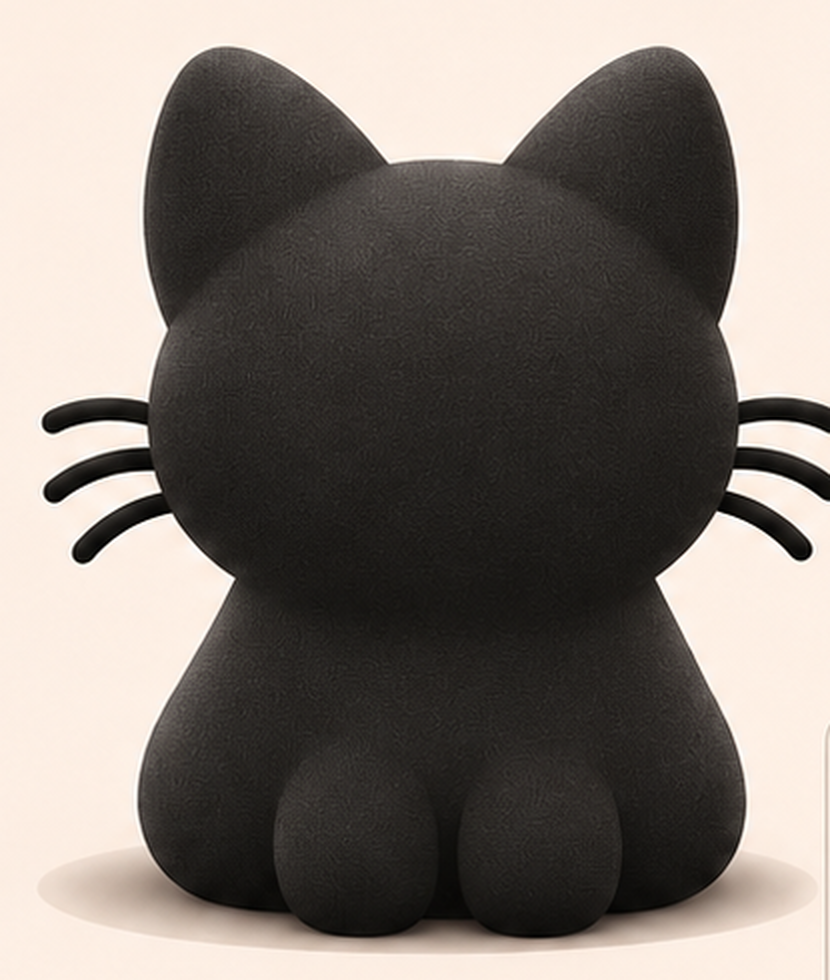

Drag to spin. Each model came from the character sheet through a free online demo, untouched.

Wireframe shows how clean the mesh is. Animation needs a tidy mesh, so a messy one means a clean-up pass in Blender first.